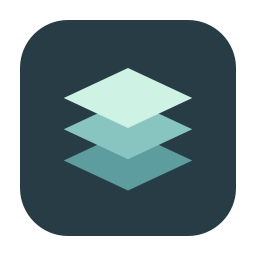

各自登录，各自保存
新增账户保留独立的应用数据目录。默认账户沿用本机已有数据；登录仍在官方客户端里完成。

CodexM 下载 Mac 版工作账户、个人账户，各自登录。
从一处找到窗口，把注意力留给正在做的项目。
v1.0.4 · macOS 14+
Apple Silicon 与 Intel · 需要兼容的官方客户端
查看正在处理的窗口，点击即可切换到对应任务。
这里演示账户与窗口的关系，不是应用截图，也不会连接你的账户。
减少寻找窗口和重复登录的来回。
从启动账户，到继续任务，都有明确入口。
新增账户保留独立的应用数据目录。默认账户沿用本机已有数据；登录仍在官方客户端里完成。
查看账户的窗口数量，悬停窗口项预览，用呼吸边框识别目标窗口。点击切换，少找一次窗口。
整理上下文，在新任务继续；或经过检查，将所选任务历史导入目标账户。两种方式，按需求选择。
先选来源任务和目标账户，再选择如何继续。
点击下方切换，了解两种方式的区别。
读取所选任务，预览接力内容，生成接力包；到目标客户端手动粘贴并发送继续指令。
暂停来源任务、停止目标客户端，通过占用与兼容性检查后导入。保留原会话历史和时间，以及本地项目归属。
原生迁移会写入目标任务存储。遇到不支持的任务或客户端版本，可改用上下文接力；检查失败时保留诊断信息。
需要兼容的官方客户端。CodexM 识别应用标识 com.openai.codex，部分版本在系统中显示为 ChatGPT。
先安装兼容的官方客户端。将 CodexM 拖入 Applications，启动后在“通用设置”中确认或选择客户端。
在“我的账户”添加配置，点击启动，在官方客户端内登录。已有本机账户可通过默认账户继续使用。
打开菜单栏。悬停右侧箭头展开操作菜单，移走关闭；点击箭头固定展开。选择窗口即可切换。
打开“项目接力”，选择来源任务、目标账户与方式。按照界面提示准备、预览或执行导入。
账户隔离是应用数据目录隔离。CodexM 不提供账户服务器、遥测或凭据同步。
CodexM 检测认证状态时只读取认证文件元数据，不解析认证文件内容。官方客户端自身的网络行为由其控制。
默认位于 ~/Library/Application Support/CodexM/，可以在设置中调整。默认账户继续使用官方客户端原有位置。
在通用设置或错误弹窗复制诊断信息。最近 100 条记录不包含账户名称、路径、凭据或对话内容，便于按阶段和错误码排查。
CodexM v1.0.4 · macOS 14+
Universal，支持 Apple Silicon 与 Intel。
本次更新：修复旧主机名遗留锁导致的目录迁移受阻，迁移时显示复制进度。
独立开发的开源工具，与 OpenAI 无隶属或背书关系，不包含官方客户端。
多窗口、跨桌面聚焦与原生迁移，需在你的客户端版本下验证。
默认不会。已运行的客户端继续运行，可以在通用设置中更改这一行为。
新增账户可以删除，数据会移入废纸篓。正在运行或被占用的账户不能删除；默认账户不能删除。账户配置可以重命名。
先核对官方客户端版本及占用状态，按提示暂停来源任务、停止目标客户端。迁移依赖本地加载器，部分任务结构不支持；可改用上下文接力。目标数据发生变化后，回滚也可能被拒绝，以免覆盖后续工作。
需要 Xcode 26+ 与 Python 3。按项目开发文档设置 Xcode 路径，并运行 ./scripts/build_release.sh，生成 App、DMG 与 ZIP。
提供 macOS、CodexM、官方客户端版本及复现步骤，按需附上应用生成的诊断信息。不要上传认证文件或完整私人会话。